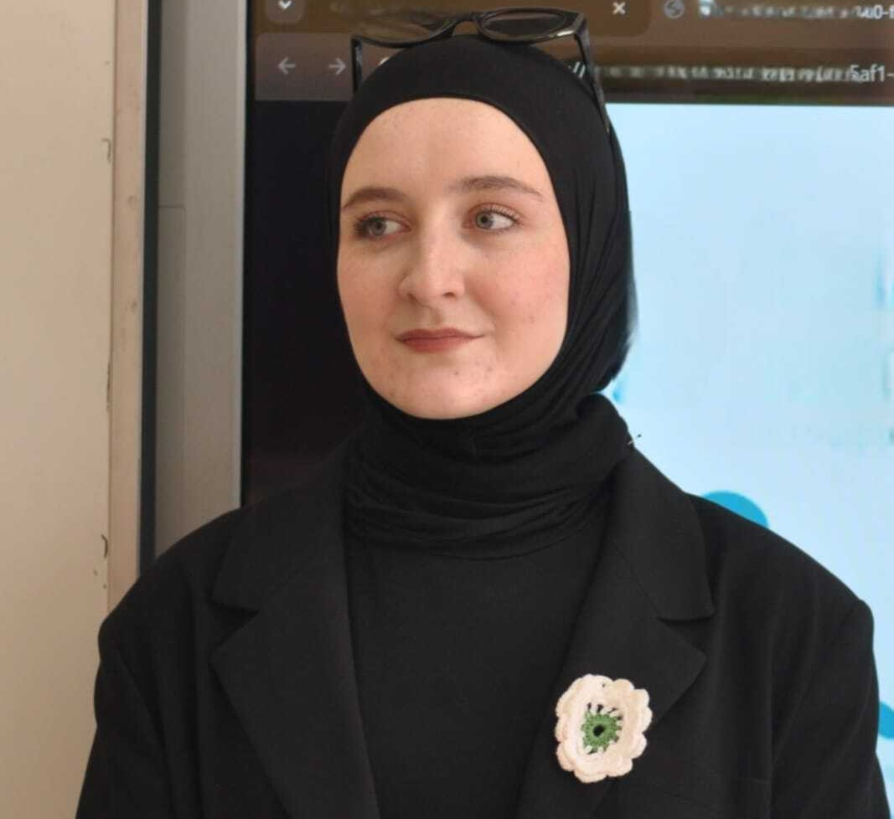

Current member
BSc. degree from Canakkale Onsekiz Mart University in Computer
Engineering (Türkiye 100% Scholarship)
Currently MSc. student in EEE at Canakkale Onsekiz Mart
University
TÜBİTAK 3501 Project Student Researcher & Scholarship
Recipient
LinkedIn